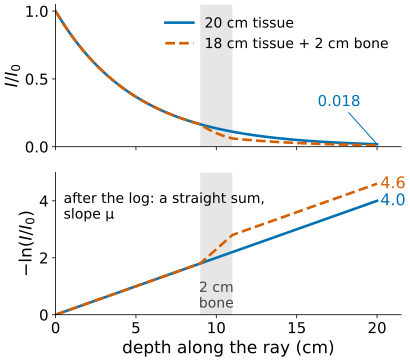
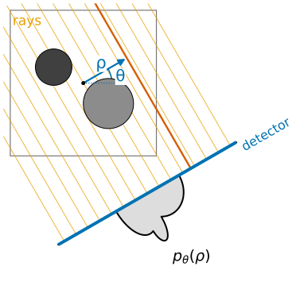
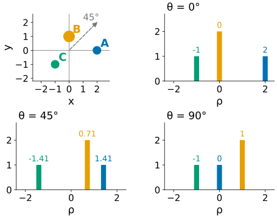
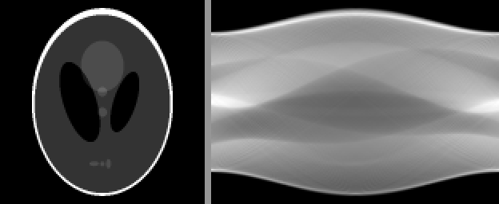
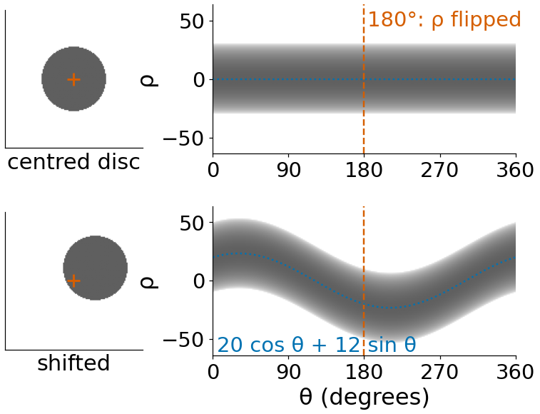
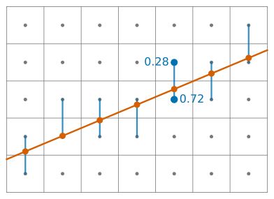
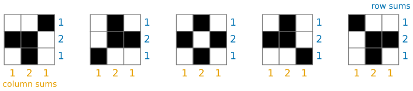

An X-ray image overlays everything the beam passed through: ribs, heart and spine end up on top of each other. Computed tomography (CT) gets a clean slice instead. The idea of the day: take many X-ray profiles from all around the object, then undo the overlaying.
What an X-ray detector measures: a line integral of the attenuation.
Lines described by an angle and a distance, (\theta, \rho).
A projection = all parallel line integrals at one angle; stacked over angles they form the sinogram.
A point becomes a sinusoid; shifts, sums and the 180° symmetry of sinograms.
This unit is about the measurement. The next three invert it: back-projection, filtered back-projection, and reconstruction as a linear system.
Slides titled The math give the formulas and proofs; the ideas are complete without them.
A narrow beam of I_0 photons crosses the body; I arrive at the detector.
Every centimetre of material removes a fixed fraction of the photons that reach it. That fraction per cm is the attenuation coefficient\mu: higher for bone than for soft tissue, about 0.2 cm⁻¹ for water-like tissue.
Fractions multiply along the path: through 20 cm of tissue with \mu = 0.2 cm⁻¹, I/I_0 = e^{-4} \approx 0.018. Under 2 % of the photons get through.
Taking -\ln(I/I_0) turns the product into a sum: -\ln(I/I_0) = \mu_1 \Delta s + \mu_2 \Delta s + \dots, the sum of \mu along the ray (times the step). In the limit: a line integral.

Top: the fraction of photons left falls exponentially with depth (20 cm of tissue: 0.018 at the end; a bone layer makes it fall faster). Bottom: after the logarithm the same curves are straight running sums, ending at 4.0 and 4.6.
So after a logarithm, each detector reading is “how much stuff lies on this line”. That number is what CT reconstructs from.
The math: Beer–Lambert
Along the ray (arc length s) the beam loses photons in proportion to how many there are and to the local attenuation:
Assumes a monochromatic beam (one photon energy). Real tubes emit a spectrum; low energies are absorbed first (“beam hardening”), which bends this straight line slightly.
Two layers: 18 cm of tissue (\mu = 0.2) and 2 cm of bone (\mu = 0.5): -\ln(I/I_0) = 3.6 + 1.0 = 4.6, I/I_0 = e^{-4.6} = 0.010. The order of the layers does not matter: a sum.
Other machines that measure line integrals
The rest of the day only needs “each measurement = a line integral”. The same mathematics serves
electron tomography: a thin specimen tilted in the microscope; each image is a projection of the specimen’s density;
PET and SPECT: a radioactive tracer emits photons; detectors count the emissions along lines (no logarithm: the counts themselves are the sums);
optical projection tomography: cleared embryos or organs imaged with visible light from many angles.
Volume rendering (the 3D graphics day, volume rendering) computes projections of a known volume to look at it; tomography does the opposite: it has the projections and wants the volume.
Lines as (\theta, \rho)
Coordinates: origin at the image centre, x right, yup, angles counter-clockwise.
A line is the set of points with x\cos\theta + y\sin\theta = \rho.
\theta \in [0°, 180°): the direction of the line’s normal; \rho: the signed distance of the line from the centre.
\theta = 0°: vertical lines x = \rho. \theta = 90°: horizontal lines y = \rho.
The same convention as the Hough day (Hough lines; there: lines found by voting; here: grey values summed along lines).
A projection at angle \theta is the profile p_\theta(\rho): the line integrals of all parallel lines, one per detector bin. At \theta = 0° the rays run vertically and p_0 is the column sums of the image; at 90° it is the row sums.

Two discs, the parallel rays at θ = 30° (orange), one ray at distance ρ from the centre (red), and the projection p_θ(ρ) drawn on the detector: one line integral per detector bin.
Three points by hand
Point masses A = (2, 0) with mass 1, B = (0, 1) with mass 2, C = (-1, -1) with mass 1. A point lands at \rho = x\cos\theta + y\sin\theta.
\theta
A
B
C
0°
2
0
−1
45°
1.41
0.71
−1.41
90°
0
1
−1
Each projection is three bars at these \rho, with heights 1, 2, 1. Every projection sums to 4, the total mass: nothing gets lost, it only moves.

The three points (top left) and their projections at 0°, 45° and 90°: bars at the ρ values of the table, heights 1, 2, 1.
Try it: projections and the sinogram
The sinogram
Stack the projections side by side: \theta across, \rho up. This picture is the sinogram: it is all the scanner measures.
A point at radius r and direction \varphi traces \rho = r\cos(\theta - \varphi): a sinusoid, hence the name.
Amplitude = distance from the centre; phase = the point’s direction: the curve peaks at \theta = \varphi.
The centre of rotation is the only point that stays put: a flat line at \rho = 0.
Where two sinusoids cross, the two points lie on the same ray: they hide behind each other at that angle. A and B cross at \theta = 63.4°.

The Shepp–Logan phantom (a standard test object for CT) and its sinogram, 180 angles.
Four properties of every sinogram
Linearity: the sinogram of two objects is the sum of their sinograms. Overlapping sinusoids add.
Shift: moving the object by \mathbf t = (t_x, t_y) moves every point’s curve by t_x\cos\theta + t_y\sin\theta: the sinogram is bent by a sinusoid, it does not just slide.
Symmetry: the ray (\theta + 180°, \rho) is the ray (\theta, -\rho) walked the other way, so p_{\theta + 180°}(\rho) = p_\theta(-\rho). Half a turn is enough for parallel beams.
Mass: every projection sums to the same number, the total of the image.

Sinograms over a full turn of a centred disc (a straight band) and of the same disc shifted by (20, 12) pixels (the band bends along 20 cos θ + 12 sin θ). After 180° (dashed) each band repeats upside down in ρ.
A real sinogram that breaks one of these tells you something went wrong in the scanner: a moving patient, a wrong centre of rotation, a dead detector element.
Linear: \mathcal R(af + bg) = a\,\mathcal R f + b\,\mathcal R g.
Shift: f(\mathbf x - \mathbf t) \mapsto \mathcal R f(\rho - \mathbf t\cdot\mathbf n_\theta, \theta) (substitute \mathbf x = \mathbf x' + \mathbf t).
Symmetry: \mathcal R f(-\rho, \theta + \pi) = \mathcal R f(\rho, \theta), since \mathbf n_{\theta + \pi} = -\mathbf n_\theta.
Mass: \int \mathcal R f(\rho, \theta)\,d\rho = \iint f\,dx\,dy for every \theta (the change of variables (\rho, s) is a rotation).
Uniform disc of radius R, value \mu: \mathcal R f(\rho, \theta) = 2\mu\sqrt{R^2 - \rho^2} for |\rho| \le R (the chord length). An ellipse has a closed form too, which is why test phantoms are built from ellipses: their sinograms are exact.
On a pixel grid
A computer image is a grid of numbers, not a function. To integrate along a ray we walk along it and read the image between pixel centres by linear interpolation (the images unit’s bilinear interpolation, in one direction).
One detector bin per pixel width, rays through the bin centres.
Rays steeper than 45° take one sample per image row, the others one per column; each sample is weighted by the path length per row or column.
The result is close to the exact integral: for the demo’s Shepp–Logan phantom the RMS difference from its exact sinogram is 1.4 % of the largest value.
Only what lies inside the circle seen at every angle is measured at every angle: the demos keep objects inside that field of view.

A ray flatter than 45° crosses a pixel grid. In each column it takes one sample (red) between the two pixel centres above and below it, weighted linearly (blue; 0.28 and 0.72 in one column).
Can you tell which image it was?
Two projections of a 3 \times 3 binary image: row sums (1, 2, 1) and column sums (1, 2, 1).

All five binary 3 × 3 images (black = 1) with row sums (1, 2, 1) and column sums (1, 2, 1).
Five different binary images have exactly these sums. Two projections do not determine the image; swapping a 2 \times 2 checkerboard pattern inside it changes no row or column sum.
More angles add more equations and remove ambiguity. How many are enough, and how to turn the numbers back into an image, is the subject of the rest of the day.
Summary
After -\ln(I/I_0), an X-ray measurement is a line integral of the attenuation \mu (Beer–Lambert).
Lines are (\theta, \rho): normal direction and signed distance from the centre.
A projection collects the parallel line integrals at one angle; the sinogram stacks them over \theta \in [0°, 180°).
A point traces a sinusoid\rho = r\cos(\theta - \varphi); sinograms are linear, shift by a sinusoid, are symmetric after 180°, and every projection has the same total.
Two projections leave many images possible: reconstruction needs many angles.